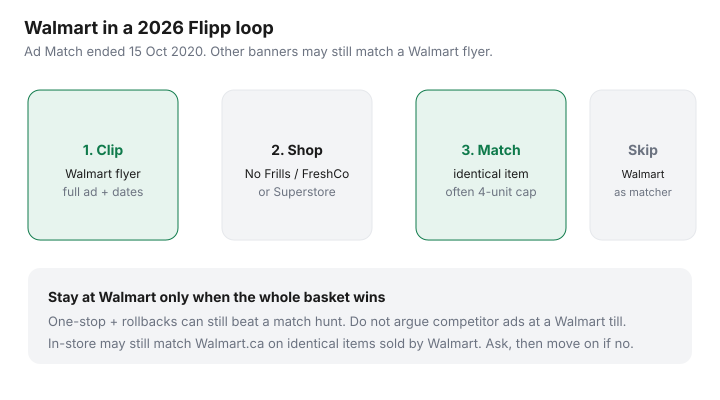

Food & Groceries · Canada
Does Walmart Canada price match groceries in 2026? What to do instead
Outdated blogs still send Canadians to Walmart with a Superstore circular and a speech. The speech fails. Walmart Canada ended competitor Ad Match on 15 October 2020 — CTV News, Daily Hive, and Walmart’s own notice at the time. Checkout delays and “minimal usage” were the company’s public reasons. Everyday-low and rollback pricing replaced matching someone else’s flyer.
In 2026 the useful move is the reverse of that old advice: clip the Walmart flyer, then match it at a banner that still does the work — often No Frills, FreshCo, Superstore, Giant Tiger, Maxi, or Save-On-Foods. Stay at Walmart when the whole basket plus rollbacks wins. Do not spend ten minutes educating a cashier about a program that has been dead for six years.
Disclosure: Cashback on Walmart.ca and grocery gift cards are offer types some households use around a one-stop shop. Saving Optimizer may earn a commission if we later add those links. We do not currently claim a Walmart partnership. Nothing in this guide requires a portal.
Key takeaways
- Competitor grocery Ad Match ended 15 Oct 2020. It has not quietly returned as a national grocery policy in 2026 reporting.
- In-store may still match Walmart.ca on identical items sold by Walmart, in stock, with limits. Ask once; move on if no.
- Use Flipp to clip Walmart ads as ammunition for No Frills, FreshCo, and other matching banners.
- Walmart can still win a one-stop basket. That is a unit-price question, not a till argument.
- If a U.S. “Walmart price match” post is in your search results, close it. Canada is a different policy.
Why competitor Ad Match ended (and what remains)
Walmart Canada’s 2020 notice said Ad Match caused line delays while few customers used it. From 15 October 2020, stores would not reduce a grocery item because a competitor advertised it cheaper. That is the policy Canadian price-match roundups still cite in 2026 (True Canadian Finds; Canada Payment Dates store lists — reviewed 12 Sep 2026). Treat those roundups as maps, not contracts: your store can still say no to anything.
What remains is narrower:
- Walmart.ca → store: identical item, sold and shipped by Walmart Canada (not a third-party marketplace listing), typically in stock online, shown at the time of purchase. Community how-tos mention supervisor discretion and quantity limits (sometimes one per item per day). Self-checkout is a poor place to try this.
- Online price-drop adjustments on orders you already placed follow Walmart.ca rules, not a competitor flyer.
- Rollbacks and Great Value are the in-aisle tools. Read unit prices anyway — a rollback on a shrunken pack is not automatically a win.
U.S. blogs: Walmart U.S. matching rules are not Canadian policy. If the screenshot shows dollars without cents-on-the-dollar tax talk and a Supercenter layout, it is the wrong country.
Matching Walmart.ca prices in-store vs online rollbacks
Before you unload, open Walmart.ca on the SKU. If the site is cheaper than the shelf on an identical, Walmart-sold item, ask at a staffed till or customer service — not as a confrontation. If the cheap price is a marketplace seller, a different size, or out of stock, expect a no.
Online rollbacks on groceries you will have delivered or picked up are a different product: watch substitutions and fees. A “rollback” that arrives as a more expensive substitute is not a rollback. Pickup still beats most delivery markups — see PC Express vs Voilà vs Instacart for the fee anatomy; Walmart’s own pickup is the parallel, not a Loblaw pass.
Using Walmart flyer prices as match ammunition elsewhere
This is the 2026 system. Thursday or Sunday: open Flipp, search your staples, clip Walmart ads that are identical to what your matching store sells (same brand, size, flavour). Screenshot the full ad — logo, price, dates, size.

| You clipped | Take it to | Typical result |
|---|---|---|
| Walmart flyer, identical national brand | No Frills (Won’t Be Beat) | Match, often 4-unit cap |
| Same ad | FreshCo / Chalo! (Lowest Price Guarantee) | Often 1¢ less than the Walmart price |
| Same ad | Many Superstores, Giant Tiger, Maxi, Save-On | Store-level match if Walmart is listed |
| No Frills or Superstore flyer | Walmart Canada | No. Do not try. |
Loyalty member prices, spend-X-get-X, online-only carts, and clearance are common exclusions at the matching store. Details live in the Flipp matching system.
When Walmart is still the cheapest one-stop basket
A matching run wins on three identical national-brand items. It loses when the rest of Walmart’s cart — Great Value oats, a rollback on coffee, no second parking lot — is cheaper as a system. Worked example (labelled, GTA): $18 documented match savings on chicken and cereal versus a 20-minute extra stop in February with a toddler. Stay at Walmart. Flip it: $18 savings, matching store is your usual No Frills, Walmart was never on the route. Clip and match.
City-level patterns (who wins staples) sit in the discount banner rotation. Walmart grocery coding on credit cards is messy; Amex is commonly declined. Do not pick a store to feed a card.
Building a Flipp loop that includes Walmart as source, not destination
- Favourite two banners you will visit: your discounter, plus Walmart as a flyer even if you will not shop there.
- Search milk size, chicken brand, coffee, detergent. Clip only identical items already on the list.
- Shop the matching banner. One screenshot per item. Quantity within cap.
- Scan PC Optimum or Scene+ on the way out. Walmart is not those programs.
- Once a month, do a Walmart one-stop if rollbacks on your staples beat the match hunt. Photograph unit prices. Retire the trip if it does not pay.
Decision tree: stay at Walmart vs pivot to No Frills/FreshCo
- Stay: you are already in the parking lot, three rollbacks beat the discounter on unit price, and you do not have a matching banner on the way home.
- Pivot: your usual store matches Walmart, you have four high-dollar identical clips, and the rest of the cart is cheaper at the discounter anyway.
- Split: rare. Two stores for $4 is a hobby. Two stores for documented protein + coffee gaps can be a system — see the weekly loop.
The till is not a debate club. If a 2019 Pinterest graphic says “Walmart price matches,” it is an artifact. Shop the 2026 policy.
Sources & date stamps
- CTV News / Daily Hive coverage of Walmart Canada ending Ad Match (effective 15 Oct 2020); company language on checkout delays and everyday-low prices.
- 2026 Canadian price-match roundups (True Canadian Finds; Canada Payment Dates store list) reviewed 12 Sep 2026 — Walmart: no competitor grocery match; possible Walmart.ca adjustment.
- No Frills Won’t Be Beat and FreshCo Lowest Price Guarantee public policy pages (competitor lists often include Walmart; 4-unit caps) reviewed Sep 2026.
Frequently asked questions
Does Walmart Canada match No Frills or Superstore flyers?
No. Walmart Canada ended competitor Ad Match on 15 October 2020. Do not bring another grocer’s circular to a Walmart till and expect a grocery match. Policies can change — verify locally — but 2026 Canadian how-tos still report no competitor grocery matching.
Will Walmart match Walmart.ca in the store?
Often yes, for an identical item sold and shipped by Walmart Canada (not a marketplace third party), in stock online, shown at purchase. Quantity limits and supervisor discretion apply. This is not a competitor-ad match.
Can other stores match a Walmart flyer?
Frequently. No Frills Won’t Be Beat, FreshCo’s Lowest Price Guarantee, many Superstores, Giant Tiger, Maxi, and Save-On-Foods list local competitors that often include Walmart. Read the board at your store.
Is Walmart still the cheapest one-stop grocery shop?
Sometimes, especially with rollbacks, Great Value staples, and a trip you were already making. It is not automatically cheaper than a discounter-plus-match week. Compare unit prices and the rest of the basket.
Should I argue with a cashier about an old blog that says Walmart price matches?
No. Those posts are describing a program that ended in 2020. Take the no, shop the list or go to a matching banner with Flipp proof ready.